Werup Sport, publié
Captures de la vraie application en ligne (werup.app), iPhone, le 17/11 au matin. Ouvrir /sport
La rubrique SportFond vert pelouse. La grande carte « À la une » avec le résumé officiel.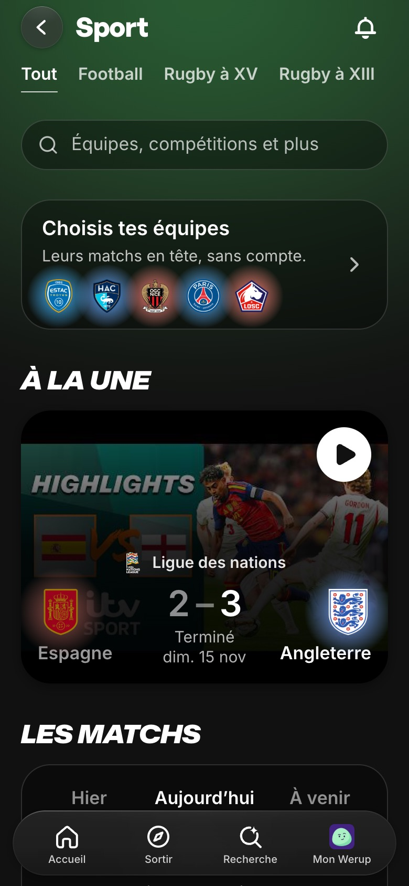
Un match, quand on le toucheAux couleurs des deux clubs : heure ou score en grand, photos des deux équipes, leur forme, l'étoile pour l'épingler.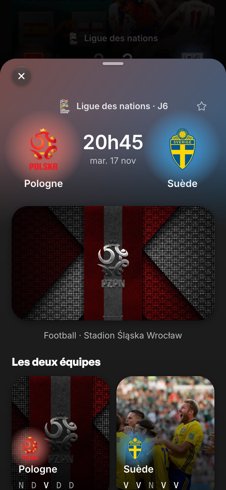
La suite de la ficheLes deux équipes, leurs prochains matchs.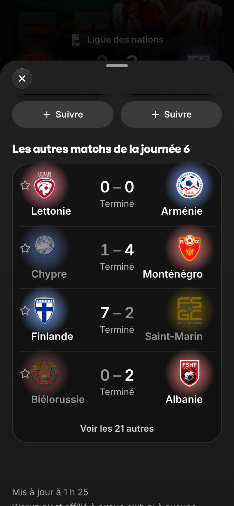
L'accueilLe chapitre Sport, pour tout le monde : une grande carte, puis les matchs.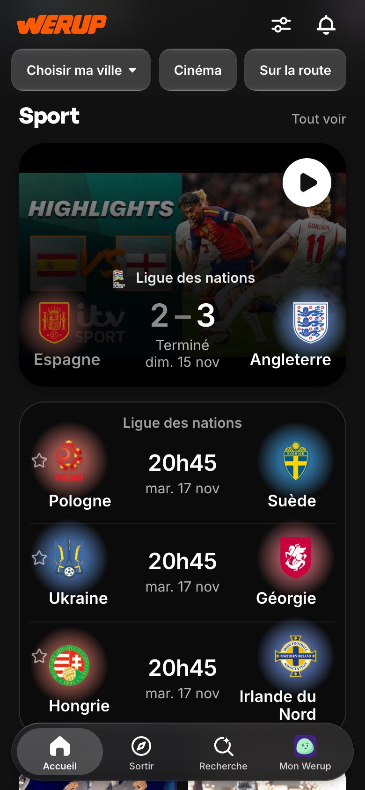
Ligue 1Son logo centré, sa couleur, sa grande photo.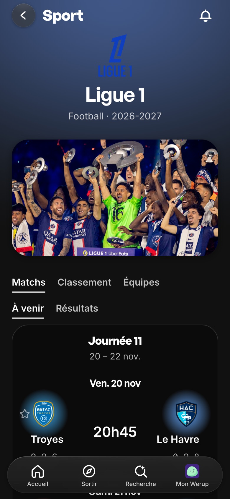
Top 14Le classement officiel, bonus compris.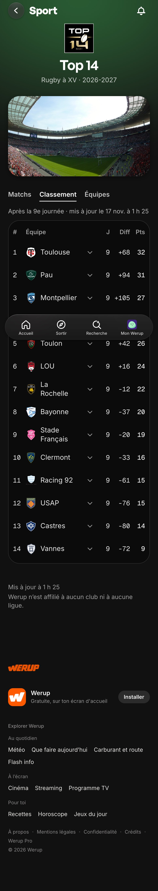
Champions Cup (nouveau)Ouverte cette nuit, comme le Tournoi des Six Nations.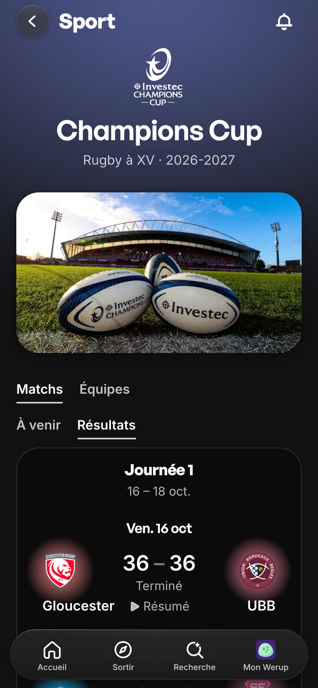
Une équipe : MarseilleSa couleur, sa photo du jour, son prochain match.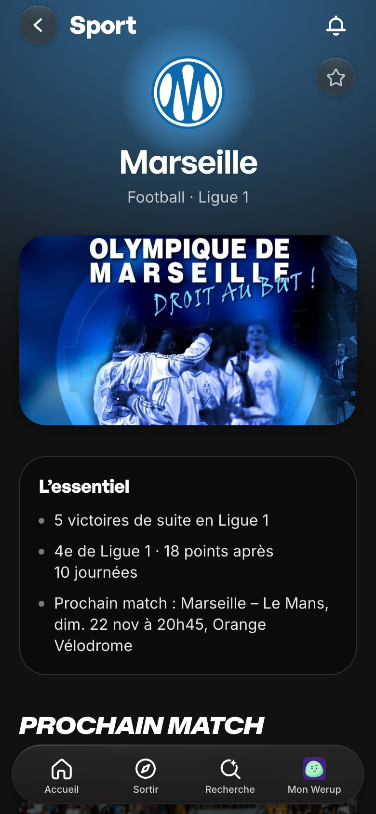
Dragons CatalansPhoto en tête, articles : un résumé puis « Lire tout ».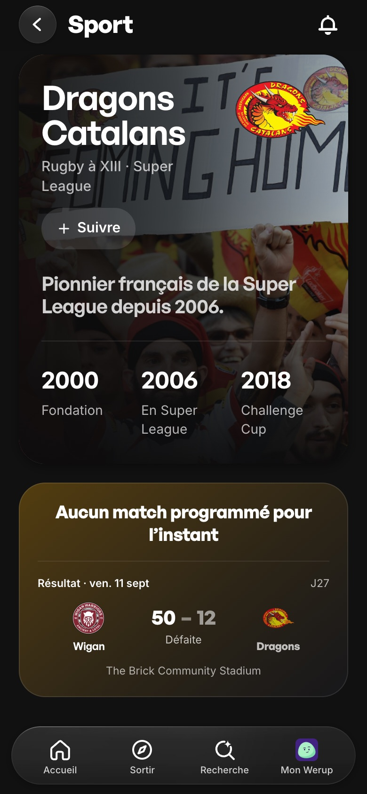
Les titres : AVANTLa police habituelle.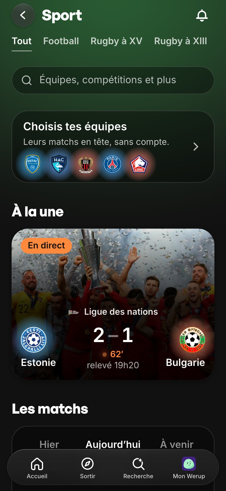
Les titres : APRÈS (en ligne, à l'essai)Gros caractères penchés, comme notre logo, seulement sur les titres du Sport. Tu gardes ou on retire ?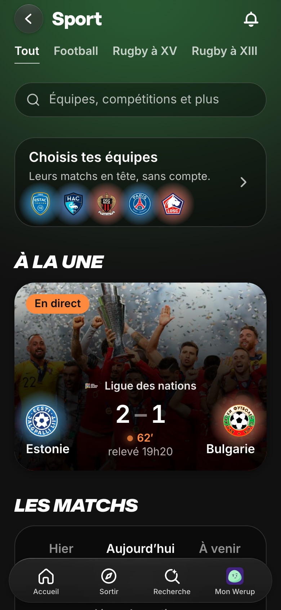